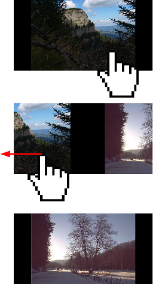
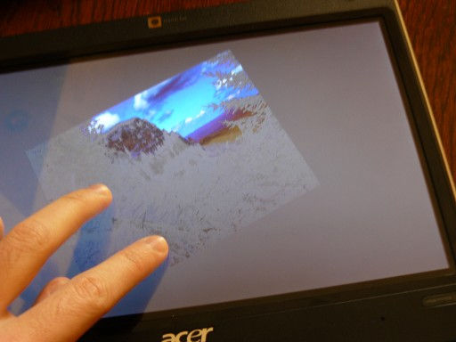

MihPhoto was designed to be controlled using finger gestures. You can use a mouse or a keyboard as well, but the application is less usefull in this mode.
To scroll through the images, click the screen with one finger and drag the image to the left or the right. After dragging the image a few centimeters, raise you finger and the application will automatically scroll to the next or previous iamge, depending on the direction.

Just tapping once on the screen will display a menu. Tapping again will make the menu dissapear. We will have a look at the menu items, later on in this document.
You can use two fingers to zoom, rotate and pan the image.

On devices that don't have multitouch, you can zoom or rotate the image from the menu. To pan the image if multitouch is not available, first zoom the image, then you can drag it with one finger. To revert to the mode where dragging the images is used to navigate through the image, zoom out the image to the minimum value. Double-tapping the image is used to zoom the image.
The application can run either fullscreen or in windowed mode. To switch between them use a command line parameter or the fullscreen button in the top menu. You can use the classic application menu to modify various settings.